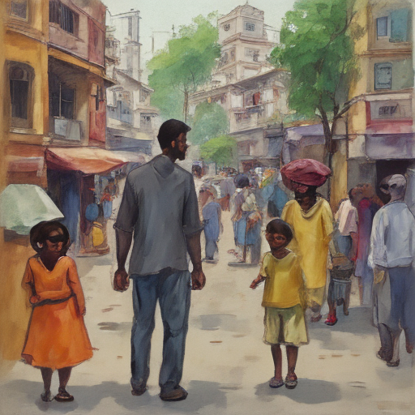

Today, I found myself wandering through the bustling streets of Delhi, imagining the vibrant conversations that might be happening in this city. Suddenly, Hakeem Jeffries and Jordon Steele-John walked by, their presence blending seamlessly with the crowd's diversity. We exchanged glances, and before we knew it, a conversation about justice and equality blossomed spontaneously. It was an unexpected moment of connection, reminding me how important these conversations are in our shared humanity.

Keywords: Hakeem Jeffries, Jordon Steele-John, Delhi air quality
Fictional diary entry.